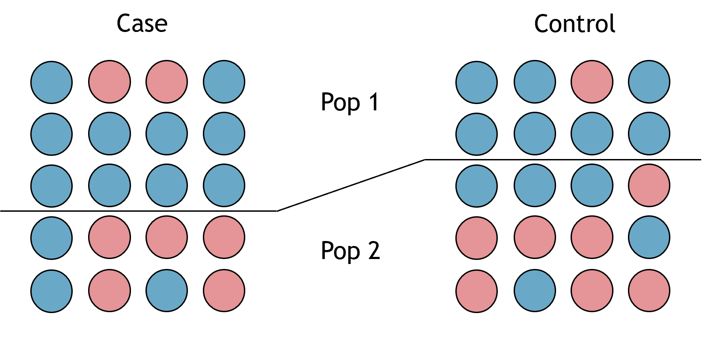

ln -sf ../Data
mkdir -p Results/GWAS4Quality Control: Relatedness & Population Stratification
Important notes for this notebook
As we have already mentioned, quality control (QC) analyses are crucial to ensure the reliability and validity of the results. In this section, we will explore confounding factors in GWAS that can lead to spurious associations if not properly controlled, including:
- Relatedness
- Population Stratification/Structure
Learning outcomes
- Discuss confounding factors that lead to spurious associations
- Detect related individuals
- Identify population substructure
- Correct for population stratification
How to make this notebook work
In this notebook, we will both use R and bash command line programming languages. Remember to change the kernel whenever you transition from one language to the other (Kernel --> Change Kernel) indicated by the languages’ images. * We will first run Bash commands.
 Choose the Bash kernel
Choose the Bash kernel
A. Relatedness
Relatedness refers to the presence of genetically related individuals in a study sample, which can introduce confounding factors into association analyses. Since most statistical methods assume that samples are independent, including related individuals, like siblings, violates this assumption. Addressing relatedness is crucial as a quality control step to ensure that genomes in the dataset are no more similar than expected for unrelated individuals. This process is essential to preserve the validity of the study’s findings.
While all humans share some genetic relatedness, the degree of relatedness varies among individuals. In genome-wide association studies (GWAS), these variations must be accounted for to avoid biasing the statistical associations between genotypes and phenotypes. Cryptic relatedness (genetic relatedness of individuals not expected to be in a family relationship) can interfere with the association analysis (Voight and Pritchard 2005).
In a family-based study (e.g., parent-offspring), you do not need to remove related pairs, but the statistical analysis should account for family relatedness. However, for a population-based study, we suggest using a \(\hat{\pi}\) threshold of 0.2. \(\hat{\pi}\) is computed as a probability P(IBD = 2) + 0.5 × P(IBD = 1), where IBD refers to “identical-by-descent”. This measures the proportion of alleles shared between individuals due to inheritance from a common ancestor. \(\hat{\pi}\) ranges between 0 (no relationship) to 1 (identical genomes).

We use ln -sf to link the data folder and create a directory for output files.
Analysis with PLINK
We will use the set of independent SNPs (generated in the previous section) and the --genome option in PLINK for our analysis.
The HapMap dataset is known to contain parent-offspring relationships. Assuming a random population sample, we will exclude all individuals above the \(\hat{\pi}\) threshold of 0.2 (dealing with cryptic relatedness) using the commands below. Thresholds for relatedness can be changed using the --min and --max options.
plink --bfile Results/GWAS3/HapMap_3_r3_7 --extract Results/GWAS3/indepSNP.prune.in --genome --out Results/GWAS4/pihatPLINK v1.90b6.21 64-bit (19 Oct 2020) www.cog-genomics.org/plink/1.9/
(C) 2005-2020 Shaun Purcell, Christopher Chang GNU General Public License v3
Logging to Results/GWAS4/pihat.log.
Options in effect:
--bfile Results/GWAS3/HapMap_3_r3_7
--extract Results/GWAS3/indepSNP.prune.in
--genome
--out Results/GWAS4/pihat
385567 MB RAM detected; reserving 192783 MB for main workspace.
1073788 variants loaded from .bim file.
161 people (77 males, 84 females) loaded from .fam.
110 phenotype values loaded from .fam.
--extract: 104129 variants remaining.
Using up to 63 threads (change this with --threads).
Before main variant filters, 110 founders and 51 nonfounders present.
Calculating allele frequencies... done.
Total genotyping rate is 0.998119.
104129 variants and 161 people pass filters and QC.
Among remaining phenotypes, 55 are cases and 55 are controls. (51 phenotypes
are missing.)
IBD calculations complete.
Finished writing Results/GWAS4/pihat.genome .The table from PLINK contains various IDs in the first columns, then: - RT Relationship - EZ IBD sharing expected value, based on just .fam/.ped relationship - Z0 P(IBD=0) - Z1 P(IBD=1) - Z2 P(IBD=2) - PI_HAT Proportion IBD, i.e. P(IBD=2) + 0.5P(IBD=1) - PHE Pairwise phenotypic code (1, 0, -1 = AA, AU, and UU pairs, respectively) - DST IBS distance, i.e. (IBS2 + 0.5IBS1) / (IBS0 + IBS1 + IBS2) - PPC IBS binomial test - RATIO IBS0 SNP ratio (expected value 2)
The specific IBD coefficients (PI_HAT, Z0, Z1 andZ2) are used to infer these relationships. PI_HAT represents the proportion of IBD sharing, and Z0, Z1, and Z2 represent the probabilities that a pair of individuals share 0, 1, or 2 alleles of IBD, respectively. These values together help determine the relationship category.
For the relationships RT, you can have:
PO(Parent-Offspring): indicates a parent-offspring relationship. The expected IBD sharing for such a pair is 50%.FS(Full Siblings): indicates a full sibling relationship. Full siblings are expected to share 50% of their genome IBD, but the pattern of sharing (i.e., segments shared by descent) differs from that of a parent-offspring pair.HS(Half Siblings): indicates a half-sibling relationship, where the individuals share one parent. They are expected to share about 25% of their genome IBD.UN(Unrelated): indicates that the pair of individuals is inferred to be unrelated. They share little to no IBD segments, which is expected for unrelated individuals in large populations.AV(Avuncular): indicates an avuncular relationship (e.g., uncle/aunt to niece/nephew), where the expected IBD sharing is around 25%.GG(Grandparent-Grandchild): indicates a grandparent-grandchild relationship, with expected IBD sharing of about 25%.CO(Cousin): is used for cousin relationships, where the expected IBD sharing is about 12.5%.OT(Other): is used for more distant relationships or complex kinship structures, and when none of the primary categories apply clearly.
Stop - Read - Solve
- What assumption in association studies is violated when individuals are related?
- How would you recognize if the same sample is duplicated in your dataset?
- What relationships (RT) are estimated by PLINK? Hint: check for unique values
- Are there closely related individuals? How many individuals show close relatedness (
PI_HAT > 0.2)?
N.B. We recommend printing the first few lines of the file to identify the columns of interest. The filename is printed in the logs from the PLINK command.
# Write your code here (add more cells if needed)
Solution
- If you have related individuals, you will lose the independence of individuals at each SNP. This is a problem because many models used in GWAS analysis do not include handling family relationships.
- Calculating the identity-by-descent (IBD) coefficient and looking for a \(\hat{\pi}\) close to 1.
- We will look for unique values in column 5 (
RT.) - We will examine \(\hat{\pi}\) values in column 10.
Let’s print the first few rows of pihat.genome and then, the unique relatioship categories in the file:
cat Results/GWAS4/pihat.genome | head -5 FID1 IID1 FID2 IID2 RT EZ Z0 Z1 Z2 PI_HAT PHE DST PPC RATIO
1328 NA06989 1377 NA11891 UN NA 0.9891 0.0109 0.0000 0.0055 1 0.720373 0.4063 1.9840
1328 NA06989 1349 NA11843 UN NA 0.9846 0.0154 0.0000 0.0077 0 0.718050 0.0223 1.8707
1328 NA06989 1330 NA12341 UN NA 0.9649 0.0351 0.0000 0.0176 1 0.721260 0.2259 1.9501
1328 NA06989 1344 NA10850 UN NA 0.9860 0.0129 0.0011 0.0075 0 0.721665 0.6441 2.0250awk '{print $5}' Results/GWAS4/pihat.genome | sort | uniq -c 222 OT
90 PO
1 RT
12568 UNWe have 90 parent-offspring, 12568 unrelated, and 222 others.
Now, let’s calculate how many individuals have a PI_HAT parameter (column 10) larger than 0.2.
awk '{ if ($10 > 0.2) print }' Results/GWAS4/pihat.genome | wc -lThere are 93 individuals with PI_HAT > 0.2 (94 lines minus header).
 Switch to the R-GWAS kernel.
Switch to the R-GWAS kernel.
Stop - Read - Solve
Write some R code to calculate the summary of the distribution of PI_HAT values (IBD sharing expected value, based on just .fam/.ped relationship) for each RT category. What do you observe?
Hint: by() and summary().
# Write your code here
Solution
Many parent-offspring (PO) relationships have a parameter close to 0.5, and the maximum value for unrelated (UN) individuals is also unexpectedly high relatedness.
Let’s plot the z-values against each other to visualize related samples. You can also find the code for summary PI_HAT values.
# Generate a plot to assess the type of relationship.
suppressMessages(suppressWarnings(library(ggplot2)))
options(repr.plot.width = 9, repr.plot.height = 4)
# Read data into R
relatedness <- read.table("Results/GWAS4/pihat.genome", header=T)
# Relatedness plot
plot.relatedness <- ggplot(relatedness) +
geom_point(aes(x=Z0, y=Z1, col=RT), size=5, alpha=.25) +
xlim(0,1) +
ylim(0,1) +
labs(x = "Z0", y = "Z2", title = "Identity by descent probabilities", col = "Relationship") +
theme_bw() +
theme(axis.title=element_text(size=14), axis.text=element_text(size=13), legend.text= element_text(size=13), legend.title=element_text(size=14), plot.title=element_text(size=15))
show(plot.relatedness)
# Relatedness histogram
hist.relatedness <- ggplot(relatedness, aes(x=relatedness[,10])) +
geom_histogram(binwidth = 0.02, col = "black", fill="tomato") +
labs(title = "Histogram of relatedness (Pi Hat)") +
xlab("Pi Hat") +
ylab("Frequency") +
theme_bw() +
theme(axis.title=element_text(size=14), axis.text=element_text(size=13),plot.title=element_text(size=15))
show(hist.relatedness)
# Summary table of PI_HAT files per RT group
summary_by_RT <- by(relatedness$PI_HAT, relatedness$RT, summary)
summary_by_RT
relatedness$RT: OT
Min. 1st Qu. Median Mean 3rd Qu. Max.
0.000000 0.005175 0.010400 0.011772 0.017225 0.042700
------------------------------------------------------------
relatedness$RT: PO
Min. 1st Qu. Median Mean 3rd Qu. Max.
0.4958 0.5000 0.5000 0.5007 0.5018 0.5060
------------------------------------------------------------
relatedness$RT: UN
Min. 1st Qu. Median Mean 3rd Qu. Max.
0.00000 0.00500 0.01070 0.01165 0.01730 0.49230 
There are three distinct categories of individuals based on the RT values:
- UN (unrelated),
- PO (parent-offspring),
- and OT (other)
The PO relationship has a 100% probability of two alleles being identical by descent, and most UN and OT samples are unrelated. However, some UN samples are probably related given the high PI_HAT values; their relationship might not be correctly recorded in the data.
The presence of related individuals is not a surprise, since the dataset was constructed to contain family trios and population structure to describe patterns of common genetic variation.
Stop - Read - Solve
Use PLINK options to filter out related individuals, using a relatedness threshold of 0.2. Name the output --out Results/GWAS4/pihat_exercise. The command is similar to the one used above, but you need an extra option. Check PLINK manual to find the one.
- How many individuals are related and would be filtered out?
- How many pairs of samples have PI_HAT values above the specified cutoff(s) are?
- Replot the z-values, which relationship categories remain?
Hint: - Use the file Results/GWAS4/pihat_exercise.log to answer the first question. They are labeled as non-founders. - Count the lines of the new output vs. the pre-filtered one. - Modify the code above to plot the z-values for the pihat_exercise.genome.
 Switch to the Bash kernel.
Switch to the Bash kernel.
# Write your code here (PLINK command) Switch to the R kernel.
Switch to the R kernel.
# Write your code here (R code)
Solution
We need the option --max 0.2 in PLINK so that only individuals below that threshold are used.

plink --bfile Results/GWAS3/HapMap_3_r3_7 --extract Results/GWAS3/indepSNP.prune.in --genome --out Results/GWAS4/pihat_exercise --max 0.2 PLINK v1.90b6.21 64-bit (19 Oct 2020) www.cog-genomics.org/plink/1.9/
(C) 2005-2020 Shaun Purcell, Christopher Chang GNU General Public License v3
Logging to Results/GWAS4/pihat_exercise.log.
Options in effect:
--bfile Results/GWAS3/HapMap_3_r3_7
--extract Results/GWAS3/indepSNP.prune.in
--genome
--max 0.2
--out Results/GWAS4/pihat_exercise
385567 MB RAM detected; reserving 192783 MB for main workspace.
1073788 variants loaded from .bim file.
161 people (77 males, 84 females) loaded from .fam.
110 phenotype values loaded from .fam.
--extract: 104129 variants remaining.
Using up to 63 threads (change this with --threads).
Before main variant filters, 110 founders and 51 nonfounders present.
Calculating allele frequencies... done.
Total genotyping rate is 0.998119.
104129 variants and 161 people pass filters and QC.
Among remaining phenotypes, 55 are cases and 55 are controls. (51 phenotypes
are missing.)
IBD calculations complete.
Finished writing Results/GWAS4/pihat_exercise.genome .Based on the log file, a total of 51 non-founders must be excluded. Now, let’s examine the change in the number of lines after applying the --max 0.2 filter. There are 93 sample pairs removed.
wc -l Results/GWAS4/pihat.genome12881 Results/GWAS4/pihat.genomewc -l Results/GWAS4/pihat_exercise.genome12788 Results/GWAS4/pihat_exercise.genome
Let’s plot the z-values again (repeating the plot from above)
# Generate a plot to assess the type of relationship.
suppressMessages(suppressWarnings(library(ggplot2)))
options(repr.plot.width = 9, repr.plot.height = 4)
# Read data into R
relatedness <- read.table("Results/GWAS4/pihat_exercise.genome", header=T)
# Relatedness plot
plot.relatedness <- ggplot(relatedness) +
geom_point(aes(x=Z0, y=Z1, col=RT), size=2.5) +
xlim(0,1) +
ylim(0,1) +
labs(x = "Z0", y = "Z2", title = "Identity by descent probabilities", col = "Relationship") +
theme_bw()+
theme(axis.title=element_text(size=14), axis.text=element_text(size=13),plot.title=element_text(size=15), legend.text = element_text(size=14),legend.title = element_text(size=14))
show(plot.relatedness)
We can see there are only UN (unrelated) individuals left.
 Switch to the Bash kernel.
Switch to the Bash kernel.
So far, you’ve learned how to filter individuals using PI_HAT thresholds. Now, we’ll demonstrate that most of the relatedness was due to parent-offspring relationships. We will achieve this by using the --filter-founders option to create a new filtered dataset that includes only the founders (individuals without listed parents in the data). This generates .bed, .bim, and .fam files, which are then used to create a .genome file containing relatedness values.
plink --bfile Results/GWAS3/HapMap_3_r3_7 --filter-founders --make-bed --out Results/GWAS4/HapMap_3_r3_8 --silent
plink --bfile Results/GWAS4/HapMap_3_r3_8 --extract Results/GWAS3/indepSNP.prune.in --genome --out Results/GWAS4/pihat_founders --silent Switch to the R kernel.
Switch to the R kernel.
Let’s plot the results from Results/GWAS4/pihat_founders.genome.
# Generate a plot to assess the type of relationship.
suppressMessages(suppressWarnings(library(ggplot2)))
options(repr.plot.width = 9, repr.plot.height = 4)
# Read data into R
relatedness <- read.table("Results/GWAS4/pihat_founders.genome", header=T)
# Relatedness plot
plot.relatedness <- ggplot(relatedness) +
geom_point(aes(x=Z0, y=Z2, col=RT), size=2.5) +
xlim(0,1) +
ylim(0,1) +
labs(x = "Z0", y = "Z2", title = "Identity by descent probabilities", col = "Relationship") +
theme_bw()+
theme(axis.title=element_text(size=14), axis.text=element_text(size=13),plot.title=element_text(size=15), legend.text = element_text(size=14),legend.title = element_text(size=14))
show(plot.relatedness)
Stop - Read - Solve
- 1. Do you observe anything unexpected in the plot?
- 2. Can you identify the IIDs of the sample pair? Hint: filter for Z0 values.
- 3. Based on the z-values, what is the most likely relationship between the pair?
- 4. What would you do about it? Hint: remove one or both? which one?
Write answer here
# R code here
Solution
- 1. The file
pihat_founders.genomeshows that, after excluding all non-founders, one individual pair removed in the exercise remains in the HapMap data. - 2. Below, we can look at the individual from the table by setting \(Z_0 < 0.5\). Even if labeled as unrelated, it has high relatedness. The IIDs of the pair are NA07045 and NA12813.
relatedness[relatedness$Z0 < 0.5,]| FID1 | IID1 | FID2 | IID2 | RT | EZ | Z0 | Z1 | Z2 | PI_HAT | PHE | DST | PPC | RATIO | |
|---|---|---|---|---|---|---|---|---|---|---|---|---|---|---|
| <int> | <chr> | <int> | <chr> | <chr> | <int> | <dbl> | <dbl> | <dbl> | <dbl> | <int> | <dbl> | <dbl> | <dbl> | |
| 2639 | 13291 | NA07045 | 1454 | NA12813 | UN | NA | 0.2574 | 0.5005 | 0.2421 | 0.4923 | 0 | 0.839757 | 1 | 9.6694 |
- 3. This remaining individual is likely to be a full sibling or DZ (dizygotic) twin pair based on the Z values (expected values for full siblings: z0=0.25; z1=0.50; z2=0.25). Noteworthy, they were not given the same family identity (FID) in the HapMap data.
- 4. We don’t need to remove both individuals from the dataset (IID1=NA07045; IID2=NA12813). It’s enough to remove just one, and the individual with the highest missing rate (lowest quality) should be chosen. Let’s calculate the missing rates using PLINK.
 Switch to the Bash kernel.
Switch to the Bash kernel.
plink --bfile Results/GWAS4/HapMap_3_r3_8 --missing --out Results/GWAS4/HapMap_3_r3_8 --silentThen, find the two individuals from the output file using grep and sorting descendingly by missing rate (EZ, column 6)
# Let's look at the output
cat Results/GWAS4/HapMap_3_r3_8.imiss | grep -E 'NA07045|NA12813' | sort -k6,6nr 13291 NA07045 N 2560 1073788 0.002384
1454 NA12813 N 1956 1073788 0.001822NA07045 is the individual to be removed. Once this is removed, their offspring can still be used in analyses that don’t involve trios, such as family-related studies.
Stop - Read - Solve
- Plot the distribution of missing rates from
HapMap_3_r3_8. What is the value forNA07045? - Remove
NA07045from the PLINK files
Hint: - Use the imiss file to plot a histogram of the missing scores from the file HapMap_3_r3_8.imiss in R (check previous notebooks for help). Is the score of NA07045 amongst the higher/lower ones? You can add a vertical line in the histogram representing the value for NA07045 using geom_vline. - Create a file with the sample ID to remove and use the --remove option in PLINK.
 Switch to the R kernel.
Switch to the R kernel.
# Write your code here
Solution
We can extract the column from the file and observe in the histogram that the individual NA07045 has a missing rate closer to the higher values.
suppressMessages(suppressWarnings(library(ggplot2)))
options(repr.plot.width = 9, repr.plot.height = 4)
# Read data into R
imiss <- read.table("Results/GWAS4/HapMap_3_r3_8.imiss", header=T)
hist.relatedness <- ggplot(data=imiss, aes(F_MISS)) +
geom_histogram(col = "black", fill = "tomato") +
geom_vline(xintercept = 0.002384, color = "red", linetype = "dashed", size = 1) +
labs(title = "Histogram of missing rates") +
xlab("Missing rate") +
ylab("Frequency") +
theme_bw() +
theme(axis.title=element_text(size=14), axis.text=element_text(size=13),plot.title=element_text(size=15))
show(hist.relatedness)Warning message:
“Using `size` aesthetic for lines was deprecated in ggplot2 3.4.0.
ℹ Please use `linewidth` instead.”
`stat_bin()` using `bins = 30`. Pick better value with `binwidth`. Switch to the Bash kernel.
Switch to the Bash kernel.
To remove the individual from the data, we create a file containing its number and ID, and provide it to PLINK with the option --remove
echo "13291 NA07045" > Results/GWAS4/id_remove.txt# Delete the individuals with the lowest call rate in 'related' pairs with a pihat > 0.2
plink --bfile Results/GWAS4/HapMap_3_r3_8 --remove Results/GWAS4/id_remove.txt --make-bed --out Results/GWAS4/HapMap_3_r3_9 --silentB. Population Stratification
Population stratification presents a significant source of systematic bias in GWAS, arising when subpopulations exhibit systematic differences in allele frequencies. Research indicates that even subtle degrees of population stratification can exist within a single ethnic population (Abdellaoui et al. 2013). Thus, testing and controlling for the presence of population stratification is an essential QC step.
The population structure (or in other words, the ancestral relationship of the populations) is a so-called confounding factor. This means that it affects both the dependent and independent variables, as shown in the figure below, where both the genotype and traits are influenced by population structure (e.g., the distribution of north and south European individuals in the PCA space and the height of those individuals).
{fig-align=“center”, width=400px}
Why is a bias introduced? Population structure can influence allele frequencies and produce false positives/negatives when doing association testing. Graphically, consider the example in the figure below. Case and control have minor allele frequencies of 1/6 and 1/8 (population 1) and 1/2, 7/12 (population 2). If you remove population structure, case and control have MAFs of 3/10, and 2/5, and those new values depend on how many samples you have from each population in the two conditions, and the MAFs of each population.
{fig-align=“center”, width=400px}
The same problem arises in population studies without Case-control categories. Imagine having a population of randomly sampled individuals, each from a different ethnicity (the blue and red minor alleles in the example below). The final group of individuals will have a different proportion of MAFs depending on the sampling of various ethnicities.
 {fig-align=“center”, width=400px}
{fig-align=“center”, width=400px}
There are several methods to correct for population stratification (Price et al. 2010, price_principal_2006). Here, we illustrate a method integrated into PLINK: the multidimensional scaling (MDS) approach. MDS calculates the genome-wide average proportion of shared alleles between any pair of individuals to generate quantitative indices (components) of the genetic variation for each individual. The individual component scores can be visualized to identify groups of genetically similar individuals. For instance, in a genetic study including subjects from Asia and Europe, MDS analysis would reveal that Asians are genetically more similar to each other than to Europeans and Africans. The figure below shows another example of MDS using HapMap, Genome diversity project, and authors’ data:

To investigate which individuals the generated component scores deviate from in the target population, plotting the scores of the dataset under investigation and a population of known ethnic structure (e.g., HapMap/1KG data) is helpful: this step is called anchoring (Rietveld et al. 2013). This enables the researcher to obtain ethnic information on their data and to determine possible ethnic outliers. For example, in the figure above, if TSI (Tuscans from Italy) is the anchor population, one can hypothesize that the yellow dots might be ethnically similar (as in the example).
Outliers identified based on MDS analysis should be excluded from further analyses. Following their removal, a new MDS analysis must be conducted, and its primary components are utilized as covariates in association tests to correct for any residual population stratification within the population. The number of components to include depends on the population structure and sample size (usually 10-20).
The MDS from Cortellari et al. (2021) shows a distinct goat population outlier. The second axis is dominated by this outlier, obscuring structure in the other populations. Removing the outlier reveals a clearer structure among the remaining populations.


Stop - Read - Solve
It is also possible to correct for relatedness (family structure). Should we also do it?
Analysis
We aim to merge the HapMap and 1000GP datasets, using 1000GP Phase I as the anchor for HapMap. Our goal is to check if we can identify the ethnicity of the HapMap data based on the ethnicities in the 1000GP dataset. There are several steps to ensure compatibility between the datasets, so stay with us!
1000GP data download
Here are some commands to download and convert the 1000GP data for GWAS analysis. You don’t need to run them, as we’ve already processed the data.
- 1000 Genomes Project - Phase I: genetic information for 629 individuals from various ethnic groups (>60GB). Phase III is now available, and we recommend using it for research purposes.
wget ftp://ftp-trace.ncbi.nih.gov/1000genomes/ftp/release/20100804/ALL.2of4intersection.20100804.genotypes.vcf.gzThe data was converted from the vcf file (Variant Call Format) to plink format (bim, fam, bed):
plink --vcf ALL.2of4intersection.20100804.genotypes.vcf.gz --make-bed --out ALL.2of4intersection.20100804.genotypes
Note
The 1000 Genomes data downloaded above is rather large so the commands are not executable and are shown for reference only. To save time, we’ve provided the .bed, .bimand .fam files in the Data folder.
Let’s unzip the files and see how many samples we have.
unzip -o Data/1000genomes.zip -d Results/GWAS4
# count lines in fam
wc -l Results/GWAS4/1000genomes.genotypesA.famArchive: Data/1000genomes.zip
inflating: Results/GWAS4/1000genomes.genotypesA.bed
inflating: Results/GWAS4/1000genomes.genotypesA.bim
inflating: Results/GWAS4/1000genomes.genotypesA.fam
inflating: Results/GWAS4/1000genomes.genotypesA.log
inflating: Results/GWAS4/1000genomes.genotypesA.nosex
37 Results/GWAS4/1000genomes.genotypesA.famWe have a subset of 37 individuals. Now, let’s explore the bim file.
cat Results/GWAS4/1000genomes.genotypesA.bim | head -51 rs112750067 0 10327 C T
1 . 0 11508 A G
1 . 0 12783 G A
1 . 0 13116 G T
1 . 0 14933 A GOne should note that the file 1000genomes.genotypes.bim contains SNPs without an rs-identifier (or Reference SNP cluster ID). The missing rs-identifiers (noted as .) are not a problem for this tutorial. However, for good practice, we will assign unique identifiers to the SNPs (using available information):
plink --bfile Results/GWAS4/1000genomes.genotypesA --set-missing-var-ids @:#[b37]\$1,\$2 --make-bed --out Results/GWAS4/1000genomes.genotypesA_no_missing_IDs --silentNow, let’s visualize the data to check the SNP names assigned. These are derived from the format @:#[b37]\$1,\$2 in the command above, which PLINK interprets as chromosome:locus[b37]Allele1,Allele2:
# Show changes on the bim file
cat Results/GWAS4/1000genomes.genotypesA_no_missing_IDs.bim | head -51 rs112750067 0 10327 C T
1 1:11508[b37]A,G 0 11508 A G
1 1:12783[b37]A,G 0 12783 G A
1 1:13116[b37]G,T 0 13116 G T
1 1:14933[b37]A,G 0 14933 A GPretty neat, right?
QC on 1000GP data
As we covered in the GWAS3 notebook, it’s important to account for missingness, sex discrepancies, and minor allele frequency. We’ll apply standard QC thresholds to the 1000 GP data before merging it with HapMap data.
plink --bfile Results/GWAS4/1000genomes.genotypesA_no_missing_IDs --geno 0.02 \
--allow-no-sex --make-bed --out Results/GWAS4/1kG_MDS --silent
plink --bfile Results/GWAS4/1kG_MDS --mind 0.02 \
--allow-no-sex --make-bed --out Results/GWAS4/1kG_MDS2 --silent
plink --bfile Results/GWAS4/1kG_MDS2 --maf 0.05 --allow-no-sex --make-bed \
--out Results/GWAS4/1kG_MDS3 --silentSNPs matching between datasets
N.B: Ensure that the datasets you want to merge share the same genomic build! Otherwise, you’ll need to include a liftover step.
We want to only consider SNPs that both datasets have in common. First, extract SNP names from the HapMap data and filter the 1000GP data to include only matching SNPs.
#Print out SNPs from the HapMap data
awk '{print$2}' Results/GWAS4/HapMap_3_r3_9.bim > Results/GWAS4/HapMap_SNPs.txt
#Extract the HapMap SNPs from the 1000GP data
plink --bfile Results/GWAS4/1kG_MDS3 --extract Results/GWAS4/HapMap_SNPs.txt \
--make-bed --out Results/GWAS4/1kG_MDS4 --silentThis is how part of the list of SNP names looks like:
cat Results/GWAS4/HapMap_SNPs.txt | head -5rs3131972
rs3131969
rs1048488
rs12562034
rs12124819Now we take the variants from the reduced 1000GP data, and go the other way around. We extract 1000GP variants from the HapMap data. In other words, the two extraction passages will intersect the SNPs. Below is the code to use the SNPs of the 1000GP data to reduce the HapMap data.
#Print out SNPs from the HapMap data
awk '{print$2}' Results/GWAS4/1kG_MDS4.bim > Results/GWAS4/1kG_MDS4_SNPs.txt
#Extract the HapMap SNPs from the 1000GP data
plink --bfile Results/GWAS4/HapMap_3_r3_9 --extract Results/GWAS4/1kG_MDS4_SNPs.txt --recode \
--make-bed --out Results/GWAS4/HapMap_MDS --silentLook at the SNP names. Now, they are matching between the two bim files.
Stop - Read - Solve
Look at the two outputs a bit more carefully. Is there any problem?
Hint: - compare the chromosome and position across the 2 datasets. - compare the two alleles
head Results/GWAS4/HapMap_MDS.bim1 rs3131969 0 744045 A G
1 rs12562034 0 758311 A G
1 rs4970383 0 828418 A C
1 rs4475691 0 836671 T C
1 rs1806509 0 843817 C A
1 rs28576697 0 860508 C T
1 rs3748595 0 877423 A C
1 rs13303118 0 908247 G T
1 rs1891910 0 922320 A G
1 rs3128097 0 970323 G Ahead Results/GWAS4/1kG_MDS4.bim1 rs3131969 0 754182 A G
1 rs12562034 0 768448 A G
1 rs4970383 0 838555 A C
1 rs4475691 0 846808 T C
1 rs1806509 0 853954 A C
1 rs28576697 0 870645 C T
1 rs3748595 0 887560 A C
1 rs13303118 0 918384 T G
1 rs1891910 0 932457 A G
1 rs3128097 0 980460 G ABuild matching
Genomic data is based on a reference genome, and our datasets use different human reference versions. Since the reference genome improves over time, SNP positions may differ between datasets from different versions.
We extract SNP names and positions from the HapMap data and align the 1000GP data to match these SNPs using the --update-map option in PLINK.
#Extract the HapMap variant coordinates
awk '{print$2,$4}' Results/GWAS4/HapMap_MDS.map > Results/GWAS4/buildhapmap.txtThis is how the list of SNPs look like:
cat Results/GWAS4/buildhapmap.txt | head -5rs3131969 744045
rs12562034 758311
rs4970383 828418
rs4475691 836671
rs1806509 843817We run PLINK to update the 1000GP variant coordinates based on HapMap, ignoring the warning about non-ascending positions:
plink --bfile Results/GWAS4/1kG_MDS4 --update-map Results/GWAS4/buildhapmap.txt --make-bed \
--out Results/GWAS4/1kG_MDS5 --silentWarning: Base-pair positions are now unsorted!Merging datasets and performing MDS
Before merging the HapMap and 1000 Genomes datasets, we ensure compatibility through 3 steps:
- Verify the reference genome is compatible in both datasets.
- Align SNP orientations (strand) across datasets.
- Remove SNPs that still differ after these steps.
The next steps are technical but ensure the datasets correspond correctly.
1. We’ve matched SNP positions, but we also need to ensure the reference alleles align. Remember that most PLINK analyses consider the A1 allele (typically the minor allele) as the reference allele, which is logical when dealing exclusively with biallelic variants.
Below, we generate a list of SNPs ID and ‘reference alleles’ (corresponding to A1, column 5) from 1000GP.
#Extract variant coordinates and reference alleles from 1000GP data
awk '{print$2,$5}' Results/GWAS4/1kG_MDS5.bim > Results/GWAS4/1kg_ref-list.txtHow the list looks like:
head -5 Results/GWAS4/1kg_ref-list.txtrs3131969 A
rs12562034 A
rs4970383 A
rs4475691 T
rs1806509 AThen, we assign them to the HapMap data --reference-allele option (aliases for --a1-allele). We use &> /dev/null to redirect many warning messages away from the screen (Warning: Impossible A1 allele assignment for variant rs11488462). This warning flags variants with genotype mismatches. To address these warnings, we will first check for strand orientation issues before excluding any problematic variants.
plink --bfile Results/GWAS4/HapMap_MDS --reference-allele Results/GWAS4/1kg_ref-list.txt --make-bed \
--out Results/GWAS4/HapMap-adj &> /dev/null2. To resolve strand issues, we flip SNPs found in both datasets with complementary alleles (i.e. they were reported in opposite strands). We generate SNP lists (ID and alleles) for both datasets, identify unique SNPs, and visualize differences in allele reporting. If a SNP is unique but reports alleles differently, it will appear twice. Below are examples of SNPs with strand issues from the 1000GP and HapMap data:
awk '{print$2,$5,$6}' Results/GWAS4/1kG_MDS5.bim > Results/GWAS4/1kGMDS5_tmp
awk '{print$2,$5,$6}' Results/GWAS4/HapMap-adj.bim > Results/GWAS4/HapMap-adj_tmp
sort Results/GWAS4/1kGMDS5_tmp Results/GWAS4/HapMap-adj_tmp |uniq -u > Results/GWAS4/all_differences.txthead -6 Results/GWAS4/all_differences.txtrs10006274 C T
rs10006274 G A
rs1008660 A G
rs1008660 T C
rs10088098 C T
rs10088098 G AHow many of these differences are there?
wc -l Results/GWAS4/all_differences.txt604 Results/GWAS4/all_differences.txtSome of these differences might be might be due to strand issues.
Let’s look at this variant rs10006274. Will it be flipped in the HapMap dataset?
The answer is yes! If we look at the reference allele in 1kg_ref-list.txt, it shows C. This means the SNP is on the forward strand in 1000GP (C/T) and on the reverse strand in HapMap (G/A).
grep rs10006274 Results/GWAS4/1kg_ref-list.txtrs10006274 Cgrep rs10006274 Results/GWAS4/all_differences.txtrs10006274 C T
rs10006274 G A
Stop - Read - Solve
Look at these other SNPs rs9614750 and rs10088098. Which ones will have to be flipped? Is it always the same dataset that must be flipped?
# Write your code here
Solution
We will first print out the SNPs from the reference file to know which line corresponds to each dataset (since we know we used the 1000 Genomes Project as the reference). If there are strand issues, the SNP will need to be flipped in the dataset that wasn’t used as the reference.
grep rs9614750 Results/GWAS4/1kg_ref-list.txt rs9614750 Agrep rs9614750 Results/GWAS4/all_differences.txtrs9614750 A G
rs9614750 C GFor rs9614750, the genotype is reported as A/G in the 1000GP data, while in HapMap, it is C/G. This discrepancy between the two datasets means that the SNP will need to be removed later.
grep rs10088098 Results/GWAS4/1kg_ref-list.txt rs10088098 Cgrep rs10088098 Results/GWAS4/all_differences.txtrs10088098 C T
rs10088098 G AFor rs10088098, the genotype is reported as C/T in the 1000GP data, while in HapMap, it is G/A. This means that PLINK will flip the allele, as they are complementary.
Now we take only the SNP names and give them to PLINK (option --flip), together with the reference genome (option --reference-allele):
## Flip SNPs for resolving strand issues.
# Print SNP-identifier and remove duplicates.
awk '{print$1}' Results/GWAS4/all_differences.txt | sort -u > Results/GWAS4/flip_list.txtwc -l Results/GWAS4/flip_list.txt302 Results/GWAS4/flip_list.txtThese are the SNP ID of non-corresponding SNPs (N=302) between the two files.
head -5 Results/GWAS4/flip_list.txtrs10006274
rs1008660
rs10088098
rs1011297
rs1023098
302 Results/GWAS4/flip_list.txtApply the flipping option:
plink --bfile Results/GWAS4/HapMap-adj --flip Results/GWAS4/flip_list.txt --reference-allele Results/GWAS4/1kg_ref-list.txt \
--make-bed --out Results/GWAS4/corrected_hapmap --silentWarning: Impossible A1 allele assignment for variant rs2581195.
Warning: Impossible A1 allele assignment for variant rs9614750.
Stop - Read - Solve
There might still be problematic SNPs after flipping.
- Check if the expected allele flip occurred. (Hint: use
grepto find thers10006274andrs9614750variants; then compare the alleles assignments in the HapMap file before and after flipping.)
# Write your code here
Solution
PLINK attempts to flip all SNPs in the list, but an error occurs when A1 does not match the one in the reference.
Notice how this SNP has changed as we predicted:
grep rs10006274 Results/GWAS4/corrected_hapmap.bim 4 rs10006274 0 124165369 C Tgrep rs10006274 Results/GWAS4/HapMap-adj.bim4 rs10006274 0 124165369 G Ars10006274 was flipped and has the same strand orientation in both datasets (same alleles in A1 and A2).
What happened to this one? PLINK attempts to resolve the mismatch by flipping the alleles but throws an error because the complementary alleles do not match the reference!
grep rs9614750 Results/GWAS4/corrected_hapmap.bim22 rs9614750 0 44436371 G Cgrep rs9614750 Results/GWAS4/HapMap-adj.bim 22 rs9614750 0 44436371 C G
Note
You don’t need to flip the 1000GP data because the reference allele (A1) in the 1000GP data already matches the strand orientation used in the HapMap data.
3. After flipping SNPs, some differ in their alleles when comparing datasets to each other (e.g. SNP rs9614750) and such SNPs must be removed.
We extract the SNPs from the corrected HapMap data and search for unique SNP (ID, A1, and A2), comparing them with those from the 1000GP data.
awk '{print$2,$5,$6}' Results/GWAS4/corrected_hapmap.bim > Results/GWAS4/corrected_hapmap_tmp
sort Results/GWAS4/1kGMDS5_tmp Results/GWAS4/corrected_hapmap_tmp | uniq -u > Results/GWAS4/uncorresponding_SNPs.txtHow many SNP missmatches are there?
wc -l Results/GWAS4/uncorresponding_SNPs.txt24 Results/GWAS4/uncorresponding_SNPs.txtThis corresponds to 12 unique SNP IDs with mismatched information.
head Results/GWAS4/uncorresponding_SNPs.txt rs11524965 T C
rs11524965 T G
rs12646999 G A
rs12646999 G T
rs17114359 C A
rs17114359 C T
rs17269854 C A
rs17269854 C T
rs2060424 G A
rs2060424 G CWe extract again the SNP IDs from the file above, and exclude them using the PLINK option --exclude in both datasets
awk '{print$1}' Results/GWAS4/uncorresponding_SNPs.txt | sort -u > Results/GWAS4/SNPs_for_exclusion.txt
plink --bfile Results/GWAS4/corrected_hapmap --exclude Results/GWAS4/SNPs_for_exclusion.txt \
--make-bed --out Results/GWAS4/HapMap_MDS3 --silent
plink --bfile Results/GWAS4/1kG_MDS5 --exclude Results/GWAS4/SNPs_for_exclusion.txt \
--make-bed --out Results/GWAS4/1kG_MDS6 --silent5. We can finally merge the data! We provide our dataset (-bfile) and the one to add (--bmerge option):
plink --bfile Results/GWAS4/corrected_hapmap --bmerge Results/GWAS4/1kG_MDS6.bed Results/GWAS4/1kG_MDS6.bim Results/GWAS4/1kG_MDS6.fam \
--allow-no-sex --make-bed --out Results/GWAS4/MDS_merge --silentPerform MDS on HapMap-CEU data anchored by 1000 Genomes data.
MDS is typically performed on independent SNPs (pruned SNPs). We have previously identified such SNPs in this course, so we will extract only these SNPs for the analysis.
plink --bfile Results/GWAS4/MDS_merge --extract Results/GWAS3/indepSNP.prune.in \
--genome --out Results/GWAS4/MDS_merge --silentNow, we can use PLINK to run MDS with the option ---mds-plot specifying the number of components to calculate.
# mds-plot
plink --bfile Results/GWAS4/MDS_merge --read-genome Results/GWAS4/MDS_merge.genome \
--cluster --mds-plot 10 --out Results/GWAS4/MDS_merge --silentFor visualization purposes, we downloaded the 1000 Genomes Project (1000GP) panel, which includes individual names and their corresponding population information.
wget ftp://ftp.1000genomes.ebi.ac.uk/vol1/ftp/release/20100804/20100804.ALL.panel -P Results/GWAS4 -qTo determine the population origins of HapMap individuals, we created a new file that combines the 1000GP panel information with the HapMap data, labeling the population HapMap entries as ‘OWN’.
awk '{print$1,$2,"OWN"}' Results/GWAS4/HapMap_MDS.fam > Results/GWAS4/popfile_own.txt
awk '{print$1,$1,$2}' Results/GWAS4/20100804.ALL.panel > Results/GWAS4/20100804.ALL.panel.txt
cat <(echo "FID IID POP") Results/GWAS4/20100804.ALL.panel.txt Results/GWAS4/popfile_own.txt > Results/GWAS4/popfile.txt
Note
The 1000 Genomes Project (1000GP) categorizes individuals into major continental groups—such as Europeans (EUR), Africans (AFR), Americans (AMR), East Asians (EAS), and South Asians (SAS)—each comprising various subpopulations. We will use this population structure information to visualize and determine the clusters our samples belong to.

 Switch to the R kernel.
Switch to the R kernel.
Let’s visualize population stratification using the multidimensional scaling (MDS) results.
options(repr.plot.width = 12, repr.plot.height = 6)
suppressMessages(suppressWarnings(library(ggplot2)))
# Read data into R
data <- read.table(file="Results/GWAS4/MDS_merge.mds",header=TRUE)
pop <- read.table(file="Results/GWAS4/popfile.txt",header=TRUE)
datafile <- merge(data,pop,by=c("FID","IID"))
# Metapopulation information for the population in the 1000GP dataset
superpop <- c(
"JPT" = "ASN",
"ASW" = "AFR",
"CEU" = "EUR",
"CHB" = "ASN",
"CHD" = "ASN",
"YRI" = "AFR",
"LWK" = "AFR",
"TSI" = "EUR",
"MXL" = "AMR",
"GBR" = "EUR",
"FIN" = "EUR",
"CHS" = "ASN",
"PUR" = "AMR",
"OWN" = "UN"
)
# add metapopulation info to the table
datafile$SUPERPOP <- superpop[datafile$POP]
# Plotting
scatter.mds <- ggplot(datafile, aes(x=C1, y=C2, color=SUPERPOP)) +
geom_point(size=5, alpha=.4) +
scale_color_manual(values=c("AFR" = "red", "AMR" = "springgreen4", "ASN" = "gold", "EUR" = "blue", "UN" = "grey" )) +
xlab("MD Component 1") +
ylab("MD Component 2") +
labs(color="Superpop") +
theme_bw() +
theme(axis.title = element_text(size = 14), legend.text = element_text(size = 15),
axis.text = element_text(size = 14), legend.title=element_text(size=15))
show(scatter.mds)The HapMap data clusters closely with European populations such as CEU, TSI, IBS, GBR, and FIN, confirming its European composition. Additionally, the absence of distant points indicates no outliers in the HapMap dataset (grey datapoints cluster together).
Exclude ethnic outliers
Let’s run the scripts to filter population stratification outliers for educational purposes (e.g. imagine a HapMap individual clusters in the lower-right corner with African populations).
 Switch to the Bash kernel.
Switch to the Bash kernel.
To identify and exclude ethnic outliers in the HapMap dataset, select individuals falling within specific cut-off thresholds. These thresholds should be determined based on the visualization of the first two dimensions from the multidimensional scaling (MDS) analysis.
What values would you select or apply in this context, and why? Hint: look at the plot above.
Preview of the MDS results:
head -3 Results/GWAS4/MDS_merge2.mds | cut -f1-6 -d$'\t' FID IID SOL C1 C2 C3 C4 C5 C6 C7 C8 C9 C10
1328 NA06984 0 -0.0218368 -0.00620683 -0.00464884 0.00121512 -0.000413235 0.00221093 0.0104188 -0.00199382 0.0173257 -0.0131241
1328 NA06989 0 -0.0208157 -0.00581126 -0.00638572 0.00503345 -0.00116741 -0.00369152 0.0120005 -0.0229035 -0.00238946 0.0381386 Based on the position of the target population’s cluster in the MDS plot, we will exclude individuals with MDS component 1 values less than 0 and MDS component 2 values less than -0.05.
The selection has to be done for the individuals we want to keep, so the area to be chosen has to be mirrored into >0 and >-0.05. We provide the MDS component values in columns 4 and 5 of the file (corresponding to the first 2 components), and extract the individuals using --keep
awk '{ if ($4 >0 || $5 >-0.05) print $1,$2 }' Results/GWAS4/MDS_merge2.mds > Results/GWAS4/EUR_MDS_merge2
plink --bfile Results/GWAS4/HapMap_3_r3_9 --keep Results/GWAS4/EUR_MDS_merge2 --make-bed \
--out Results/GWAS4/HapMap_3_r3_10 > /dev/nullCreating covariates for GWAS analysis
The 10 MDS dimensions will be used as covariates in the association analysis in the next tutorial to correct for population stratification. The covariate file is created by removing column 3 (SOL, optional metadata) from the MDS output file.
plink --bfile Results/GWAS4/HapMap_3_r3_10 --extract Results/GWAS3/indepSNP.prune.in --genome \
--out Results/GWAS4/HapMap_3_r3_10 > /dev/null
plink --bfile Results/GWAS4/HapMap_3_r3_10 --read-genome Results/GWAS4/HapMap_3_r3_10.genome \
--cluster --mds-plot 10 --out Results/GWAS4/HapMap_3_r3_10_mds > /dev/null
# Change the format of the .mds file into a plink covariate file.
awk '{print $1, $2, $4, $5, $6, $7, $8, $9, $10, $11, $12, $13}' Results/GWAS4/HapMap_3_r3_10_mds.mds > Results/GWAS4/covar_mds.txtThe covar_mds.txt file contains the covariates to adjust for residual population stratification.
head -5 Results/GWAS4/covar_mds.txtFID IID C1 C2 C3 C4 C5 C6 C7 C8 C9 C10
1328 NA06989 0.0193503 -0.0481539 0.053743 -8.56966e-05 0.0124037 -0.00872553 0.0146577 -0.0266013 0.0064429 -0.0149862
1377 NA11891 0.0105154 -0.0241653 -0.00713715 -0.0276522 0.0272997 0.0044621 -0.00373271 -0.00561896 -0.0317101 0.0188078
1349 NA11843 -0.00217144 0.0120046 -0.00508388 0.0193558 -0.00738542 0.0285001 -0.00512723 0.00271516 0.0029428 0.000145191
1330 NA12341 -0.0124555 -0.0114929 0.0019162 -0.0252928 -0.0300722 -0.00411769 -0.0207568 -0.0122574 -0.017065 0.0353729
Wrapping up
You have now successfully checked your data for relatedness population stratification. You filtered out the individuals with high relatedness and produced a summary of the population structure using the MDS projection. You will use the MDS coordinates as a proxy for the population structure you want your association testing to be corrected for.
In the next notebook on Association Testing, you will need the following files from the folder Results/GWAS4/: - HapMap_3_r3_10 (the bfile, i.e., HapMap_3_r3_10.bed, HapMap_3_r3_10.bim, and HapMap_3_r3_10.fam) - covar_mds.txt which are the HapMap data and the MDS covariates highlighting the population stratification. Those are already available once you have been running this notebook.
Below is a cheat sheet of our new methods of QC. Again, it is important to remember that each method of QC should be justified, which will depend on the nature of the feature you are trying to analyze.
| Step | Command | Function | Thresholds and explanation |
|---|---|---|---|
| 6: Relatedness | –genome | Calculates identity by descent (IBD) of all sample pairs. | Use independent SNPs ( pruning) for this analysis and limit it to autosomal chromosomes only. |
| - | –min | Sets threshold and creates a list of individuals with relatedness above the chosen threshold. This means that subjects who are related at, for example, pi‐hat >0.2 (i.e., second-degree relatives) can be detected. | Cryptic relatedness can interfere with the association analysis. If you have a family‐based sample (e.g., parent‐offspring), you do not need to remove related pairs but the statistical analysis should take family relatedness into account. However, for a population-based sample, we suggest using a pi‐hat threshold of 0.2, which is in line with the literature (Anderson et al., 2010; Guo et al., 2014). |
| 7: Population Stratification | –genome | Calculates identity by descent (IBD) of all sample pairs. | Use independent SNPs ( pruning) for this analysis and limit it to autosomal chromosomes only. |
| - | –cluster –mds-plot k | Produces a k‐dimensional representation of any substructure in the data, based on IBS. | K is the number of dimensions, which needs to be defined (typically 10). This is an important step of the QC that consists of multiple proceedings but for reasons of completeness, we briefly refer to this step in the table. This step will be described in more detail in the section “Controlling for population stratification.” |
Bibliography
Abdellaoui, Abdel, Jouke-Jan Hottenga, Peter de Knijff, Michel G Nivard, Xiangjun Xiao, Paul Scheet, Andrew Brooks, et al. 2013. “Population Structure, Migration, and Diversifying Selection in the Netherlands.” European Journal of Human Genetics 21 (11): 1277–85.
Cortellari, Matteo, Mario Barbato, Andrea Talenti, Arianna Bionda, Antonello Carta, Roberta Ciampolini, Elena Ciani, et al. 2021. “The Climatic and Genetic Heritage of Italian Goat Breeds with Genomic SNP Data.” Scientific Reports 11 (1): 10986. https://doi.org/10.1038/s41598-021-89900-2.
Price, Alkes L, Noah A Zaitlen, David Reich, and Nick Patterson. 2010. “New Approaches to Population Stratification in Genome-Wide Association Studies.” Nature Reviews Genetics 11 (7): 459–63.
Rietveld, Cornelius A, Sarah E Medland, Jaime Derringer, Jian Yang, Tõnu Esko, Nicolas W Martin, Harm-Jan Westra, et al. 2013. “GWAS of 126,559 Individuals Identifies Genetic Variants Associated with Educational Attainment.” Science 340 (6139): 1467–71.
Somers, Metten, Loes M. Olde Loohuis, Maartje F. Aukes, Bogdan Pasaniuc, Kees C. L. De Visser, René S. Kahn, Iris E. Sommer, and Roel A. Ophoff. 2017. “A Genetic Population Isolate in The Netherlands Showing Extensive Haplotype Sharing and Long Regions of Homozygosity.” Genes 8 (5): 133. https://doi.org/10.3390/genes8050133.
Voight, Benjamin F, and Jonathan K Pritchard. 2005. “Confounding from Cryptic Relatedness in Case-Control Association Studies.” PLoS Genetics 1 (3): e32.
Copyright
CC-BY-SA 4.0 license